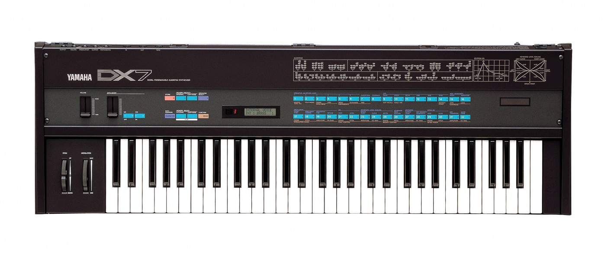

Yamaha DX7 - один из самых известных синтезаторов в истории. Он вышел в 1983 году, и его можно услышать в любой песне восьмидесятых. Это первый синтезатор, чьё число проданных экземпляров превысило 100000 (и это при цене в 2000 долларов). Среди самых известных пользователей инструмента группа a-ha, Уитни Хьюстон, Berlin, Pet Shop Boys, Sandra и др. Даже сейчас многие поп-музыканты используют его звуки в своём творчестве.
DX7 навсегда изменил музыкальный мир. Именно после его выхода синтезаторы начали очень сильно меняться, стали появляться целые новые жанры, развитие технологий заметно ускорилось. Хоть он и появился в 80-х, его звучание до сих пор актуально, и мне хотелось бы подробнее рассказать об этом инструменте.